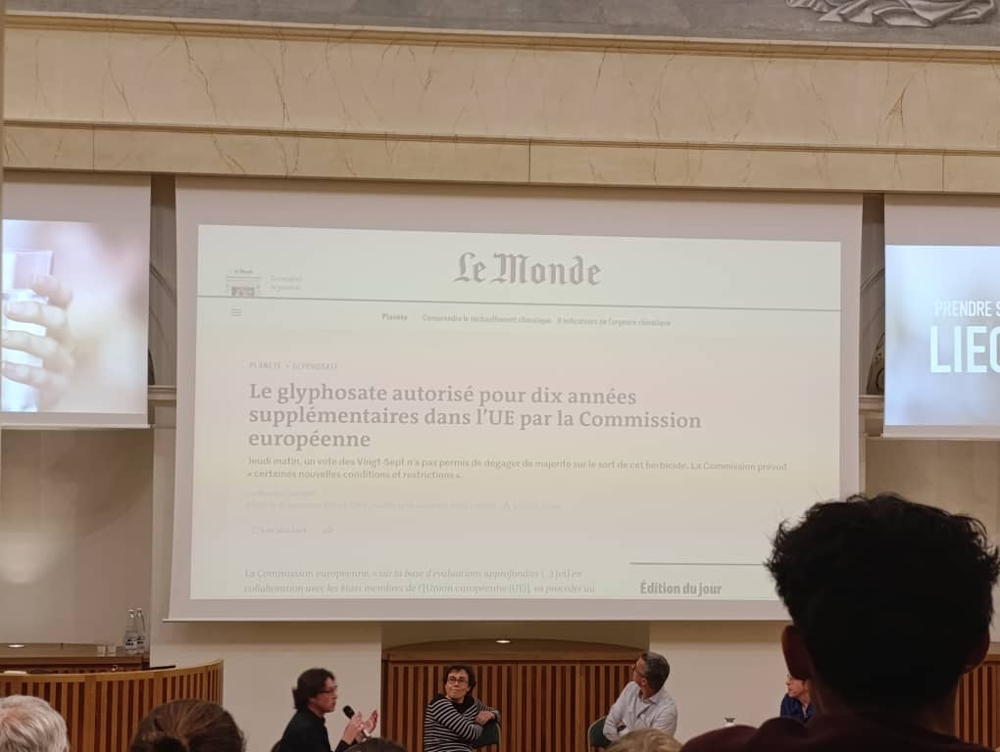

20 Gouvernance, planification d’urgence, résilience et adaptation – REX
20.1 Objectifs du module
20.2 Synthèse de la conférence : Pesticides et PFAS – Enjeux sanitaires, environnementaux et politiques

La conférence s’ouvre sur un extrait du film Dark Waters, qui illustre l’affaire judiciaire de l’avocat Robert Bilott contre la multinationale DuPont. Ce cas emblématique met en lumière :
La dissimulation par l’industrie d’informations sur la toxicité des PFAS.
Le rôle clé de citoyens et de juristes dans la mise au jour de scandales sanitaires.
L’impuissance (ou la complaisance) des pouvoirs publics face au lobbying industriel.
Cet extrait sert de cadre pour introduire le débat sur les pesticides et les PFAS, deux catégories de substances chimiques omniprésentes, persistantes et controversées.
20.2.1 Résumé
Ce présent rapport, est une forme de compte rendu de la conférence. Il fait une synthèse analytique des enjeux critiques liés à deux grandes familles de polluants chimiques : les pesticides et les substances per- et polyfluoroalkylées (PFAS), également connues sous le nom de “polluants éternels”. L’analyse, basée sur les contextes fournis, révèle une contamination environnementale généralisée et une exposition humaine omniprésente, engendrant des risques sanitaires graves et documentés, incluant divers types de cancers, des perturbations endocriniennes et des troubles du développement.
Un thème central qui émerge est la défaillance systémique de la réglementation, caractérisée par un décalage majeur entre les connaissances scientifiques sur les dangers de ces substances et les mesures de protection mises en place. Cette inertie réglementaire est largement attribuée à l’influence de puissants lobbies industriels qui déploient des stratégies sophistiquées de “fabrique du doute”, telles que le “ghostwriting” d’études scientifiques, pour retarder les interdictions et dissimuler la toxicité de leurs produits. Face à des défis de dépollution colossaux, souvent techniquement et financièrement irréalisables, la solution la plus viable est la prévention, c’est-à-dire l’arrêt des émissions à la source. Parallèlement, le journalisme d’investigation, les actions en justice et les initiatives citoyennes se révèlent être des contre-pouvoirs essentiels, permettant de mettre en lumière l’étendue des pollutions, d’établir les responsabilités et de pousser à une action politique et réglementaire plus stricte. Le pouvoir des choix de consommation, notamment en faveur d’une agriculture biologique, est également souligné comme un levier d’action individuel et collectif.
20.2.2 Émergence d’une crise sanitaire et environnementale
L’histoire de l’avocat Rob Bilott, qui a exposé la contamination massive causée par l’entreprise DuPont avec les PFAS, sert de paradigme pour comprendre la crise actuelle. Relatée dans le film “Dark Waters”, cette affaire illustre la ténacité requise pour faire face à de puissantes multinationales qui dissimulent la toxicité de leurs produits et la complexité scientifique des polluants qu’elles commercialisent. Cette lutte a révélé une contamination qui, comme celle des pesticides, s’est étendue bien au-delà des sites industriels pour toucher l’ensemble des écosystèmes et des populations.
20.2.3 Portrait des polluants incriminés
20.2.3.1 Les pesticides : Un outil agricole à double tranchant
Définition et Catégories : Les pesticides sont des substances conçues pour éliminer des espèces vivantes jugées nuisibles aux cultures. Ils se divisent en plusieurs catégories :
- Herbicides : Pour éliminer les “mauvaises herbes” (ex: le glyphosate).
- Insecticides : Pour tuer les insectes (ex: les néonicotinoïdes, connus pour leur impact sur les abeilles).
- Fongicides : Pour combattre les moisissures et champignons (ex: le chlorothalonil, un polluant majeur des nappes phréatiques).
Historique et Usage : Leur utilisation a commencé dans les années 1940 et a connu une croissance exponentielle à partir des années 1970. Le modèle agricole intensif moderne en est devenu massivement dépendant.
Acteurs Économiques : Le marché est dominé par un petit nombre de multinationales extrêmement puissantes (ex: Bayer qui a racheté Monsanto, Syngenta), consolidées par de nombreuses fusions.
20.2.3.2 Les PFAS : Les “Polluants Éternels” Omniprésents
- Définition et Propriétés : Les PFAS sont une famille de composés chimiques de synthèse, d’origine anthropique. Leur caractéristique principale est la liaison carbone-fluor, l’une des plus stables en chimie organique. Cette stabilité leur confère des propriétés antiadhésives, imperméabilisantes et une résistance aux hautes températures, mais les rend également quasi indestructibles, d’où leur surnom de “polluants éternels”.
- Applications : On les retrouve dans un nombre considérable de produits de consommation courante et industriels : ◦ Emballages alimentaires (cartons à pizza, hamburgers) ◦ Ustensiles de cuisine (poêles en Téflon) ◦ Vêtements imperméables et textiles techniques ◦ Cosmétiques (produits “waterproof”) ◦ Mousses anti-incendie (utilisées sur les bases militaires et les aéroports) ◦ Électronique, batteries, production d’hydrogène, et secteur aéronautique. • Acteurs Économiques : Les inventeurs historiques sont les entreprises américaines DuPont (aujourd’hui Chemours) et 3M. Le marché reste concentré entre quelques grands groupes industriels en raison de la complexité de cette chimie.
20.2.4 Contamination Généralisée et Voies d’Exposition
La contamination par ces deux familles de produits est aujourd’hui généralisée, touchant l’air, l’eau, les sols et même les nuages.
20.2.4.1 Exposition aux Pesticides : Du Champ à l’Assiette
L’exposition aux pesticides se produit via de multiples voies : • Exposition Professionnelle : Les agriculteurs, les ouvriers saisonniers, les fleuristes et les éleveurs sont en première ligne. C’est chez ces populations que les effets sanitaires sont les mieux documentés. • Exposition Résidentielle : Les riverains des zones agricoles sont exposés aux dérives de pulvérisation. Des études montrent des effets sanitaires à des distances allant jusqu’à 1,5 km des zones de traitement. • Exposition Alimentaire : Des résidus de pesticides se retrouvent dans les aliments issus de l’agriculture conventionnelle. Par exemple, une pomme peut subir plus de 36 traitements au cours d’une saison, et le fruit final peut contenir entre 6 et 9 résidus de pesticides différents. • Exposition Domestique : Utilisation invisible dans les produits vétérinaires (colliers anti-puces), les détergents ou les shampoings anti-poux.
20.2.4.2 Pollution par les PFAS : Des Épicentres Industriels à la Planète Entière
La pollution par les PFAS est caractérisée par des “épicentres” de contamination majeure autour des sites de production (ex: Pierre-Bénite en France, Zwijndrecht en Belgique). De là, les substances se dispersent et contaminent les nappes phréatiques, les cours d’eau et l’environnement à l’échelle mondiale. Une source majeure de préoccupation actuelle est le TFA, un PFAS à chaîne courte provenant notamment de la dégradation des gaz réfrigérants de troisième génération (utilisés dans les climatiseurs et pompes à chaleur).
20.2.5 Impacts Documentés sur la Santé Humaine et les Écosystèmes
20.2.5.1 Pathologies Associées aux Pesticides
Les études scientifiques, notamment celles menées sur les clusters de cancers pédiatriques en France (ex: Sainte-Pazanne), établissent des liens de plus en plus forts entre l’exposition aux pesticides et des pathologies graves, en particulier chez les enfants :
- Leucémies (cancers du sang).
- Troubles cognitifs et du développement.
- Maladies métaboliques comme le diabète.
20.2.5.2 Les Effets Multiples des PFAS sur l’Organisme
Les PFAS s’accumulent dans le corps humain et persistent pendant des années. Leurs effets toxiques documentés sont variés et touchent de multiples systèmes :
Santé fœtale et infantile : Faible poids à la naissance, réponse vaccinale affaiblie, retards de développement.
Perturbation endocrinienne : Maladies de la thyroïde.
Effets métaboliques : Augmentation du cholestérol.
Toxicité hépatique : Atteintes au foie.
Cancers : Cancers du rein et des testicules.
Une étude en Belgique a également montré des retards de puberté chez les adolescents exposés.
20.2.6 La défaillance réglementaire et la capture industrielle
Un constat majeur est l’échec des systèmes réglementaires à protéger les populations et l’environnement face à ces menaces chimiques.
20.2.6.1 Un Droit à la Traîne de la Science
Le concept de “risque acceptable”, qui sous-tend la réglementation, est défini par des comités d’experts sans consultation citoyenne, un processus décrit comme étant “capturé” par les intérêts industriels. Il en résulte un décalage flagrant entre les données scientifiques et les normes légales.
- Pour les pesticides : Alors que des effets sanitaires sont observés à moins de 1,5 km des champs, la réglementation française impose des zones de non-traitement de seulement 5 à 10 mètres près des habitations.
- Pour les PFAS : La réglementation est fragmentée et lente. Le concept d’“usage essentiel” est utilisé pour organiser une sortie progressive du marché, mais la définition de ce qui est “essentiel” est un enjeu politique majeur. Pour de nombreux PFAS, comme le TFA, les normes dans l’eau potable ne sont pas harmonisées en Europe et varient considérablement d’un pays à l’autre (ex: 2200 ng/L recommandé en Wallonie, basé sur les Pays-Bas, contre 60 000 ng/L en Allemagne).
20.2.6.2 La “Fabrique du Doute” : Stratégies d’Influence de l’Industrie
Les industries chimiques déploient des stratégies d’influence bien rodées pour contrer ou retarder la réglementation :
- Lobbying intense : L’industrie a inondé la consultation publique sur le projet de restriction universelle des PFAS en Europe avec plus de 5600 contributions, retardant considérablement le processus.
- “Ghostwriting” : Cette pratique consiste pour une entreprise à rédiger une étude scientifique favorable à ses produits et à la faire signer par des scientifiques externes pour lui donner une apparence de crédibilité. Des documents internes de Monsanto ont révélé que cette pratique était banale.
- Dissimulation de données : Les entreprises connaissent souvent la toxicité de leurs produits des décennies avant les régulateurs et le public. Des documents internes de 3M ont montré que l’entreprise savait dès 1975 que les PFAS s’accumulaient dans le sang humain.
20.2.6.3 Le Cas du Glyphosate
En 2015, le Centre International de Recherche sur le Cancer (CIRC), une agence de l’ONU, a classé le glyphosate comme “cancérogène probable”. Malgré ce classement et plus de 100 000 procès aux États-Unis, l’Union Européenne a réautorisé l’herbicide pour 10 années supplémentaires en 2023. Cette décision illustre l’incapacité du système réglementaire à agir sur la base des plus hauts niveaux de preuve scientifique face à la pression industrielle.
20.2.6.4 Journalisme, Justice et Initiatives Citoyennes : Les Nouveaux Contre-Pouvoirs
Face à l’inertie institutionnelle, de nouveaux acteurs émergent pour forcer le changement.
Le “Forever Pollution Project” : Cette enquête journalistique collaborative internationale a permis de créer la première carte européenne de la contamination par les PFAS. En rendant visible l’invisible, ce projet a provoqué un choc politique et citoyen, et a mis en lumière les lacunes dans la surveillance environnementale.
La Justice comme Recours : Les actions en justice se multiplient. Des décisions marquantes ont été rendues, comme la condamnation d’anciens dirigeants d’usines en Italie à des peines de prison, ou la reconnaissance par la Cour suprême suédoise que la présence de PFAS dans le sang constitue un “dommage corporel”.
Le Pouvoir du Citoyen-Consommateur : Les citoyens s’organisent pour mener leurs propres études d’imprégnation (ex: analyse de cheveux d’enfants à La Rochelle) et faire pression sur les pouvoirs publics. Par ailleurs, choisir une alimentation issue de l’agriculture biologique permet de refuser de cautionner un système agricole dépendant des pesticides et de ne pas payer les “coûts cachés” de la dépollution, qui sont supportés par la collectivité.
20.2.7 Les Solutions : Entre Prévention et Décontamination Illusoire
20.2.7.1 La Prévention : “Fermer le Robinet”
Étant donné la persistance extrême des PFAS, la seule stratégie efficace est de stopper leur production et leur émission à la source. Le projet de restriction universelle au niveau européen est une étape cruciale dans cette direction. Pour les pesticides, cela implique une transformation profonde du modèle agricole.
20.2.8 Les Limites de la Dépollution Technologique
Les solutions de dépollution pour les PFAS sont extrêmement coûteuses, énergivores et souvent inefficaces pour les molécules à chaîne courte. L’incinération à très haute température (>1100°C) peut les détruire, mais n’est pas applicable à grande échelle. Une étude a calculé qu’il n’y avait pas assez d’argent sur Terre pour éliminer tous les PFAS déjà émis depuis les années 1940.
20.2.8.1 Vers une transformation du modèle agricole
L’argument selon lequel les pesticides sont indispensables pour nourrir une population mondiale croissante est remis en question. Une part significative des surfaces agricoles (\(70\%\)) est utilisée pour nourrir le bétail ou produire des agrocarburants, et non directement pour l’alimentation humaine. De plus, 30% de la production alimentaire est gaspillée. Une transition vers un modèle agricole durable, local et moins dépendant des intrants chimiques est non seulement possible, mais nécessaire pour préserver les écosystèmes (ex: pollinisateurs) dont la production alimentaire dépend.